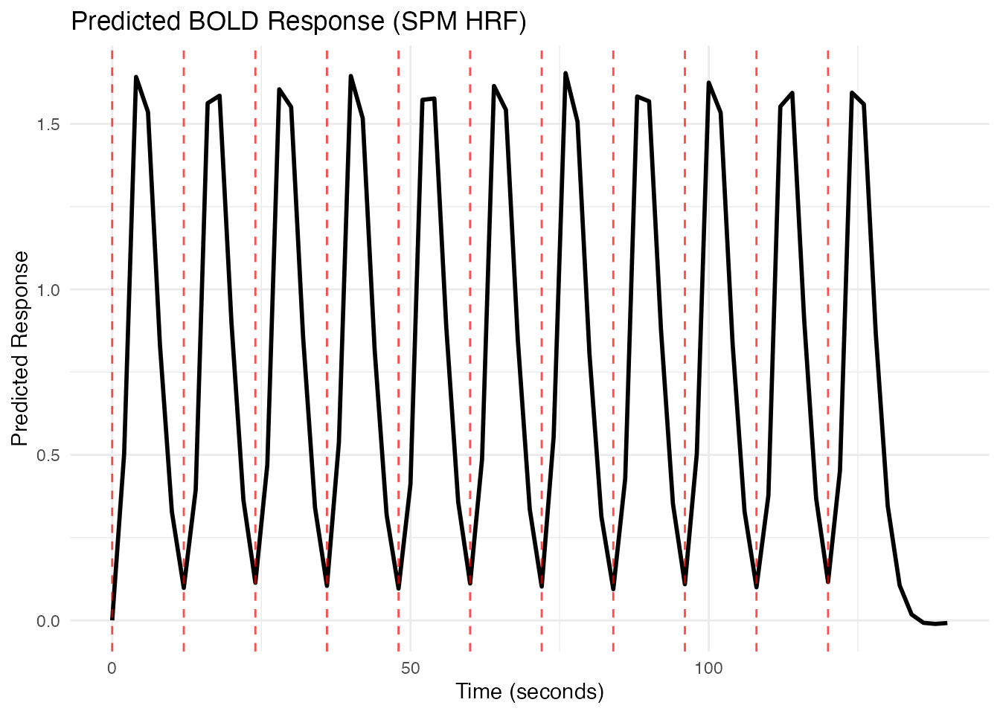
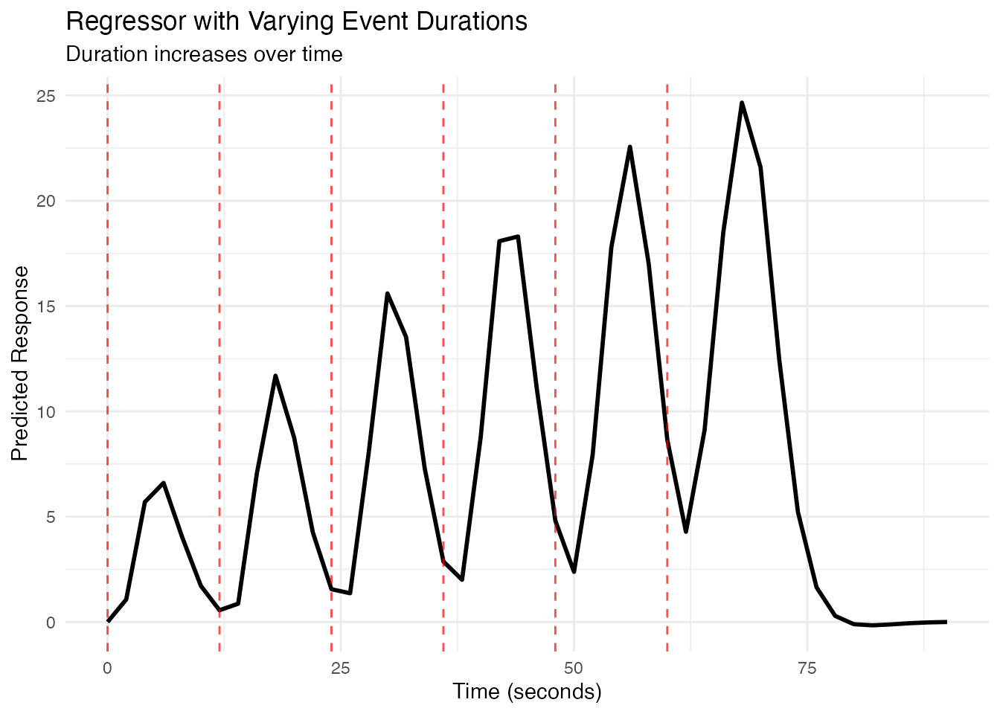
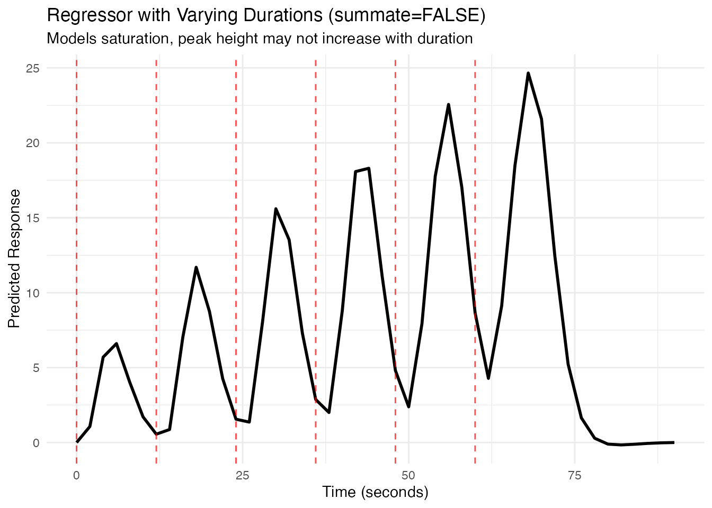
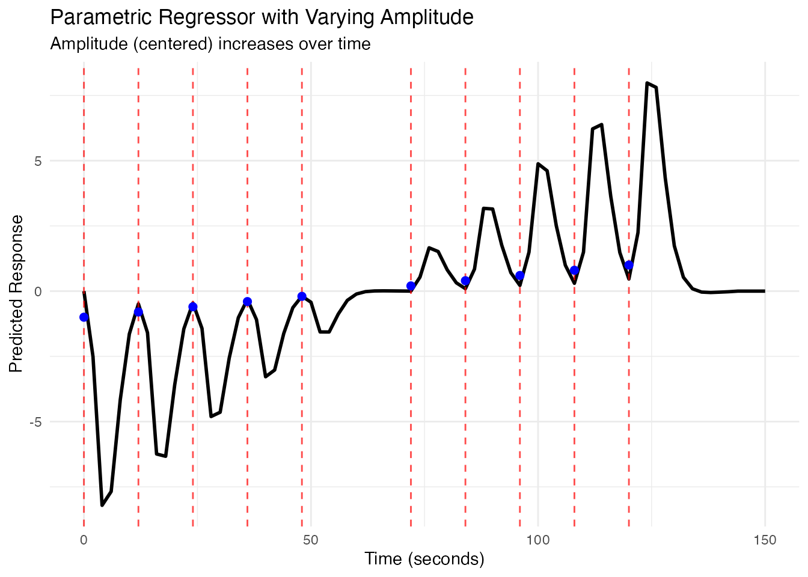
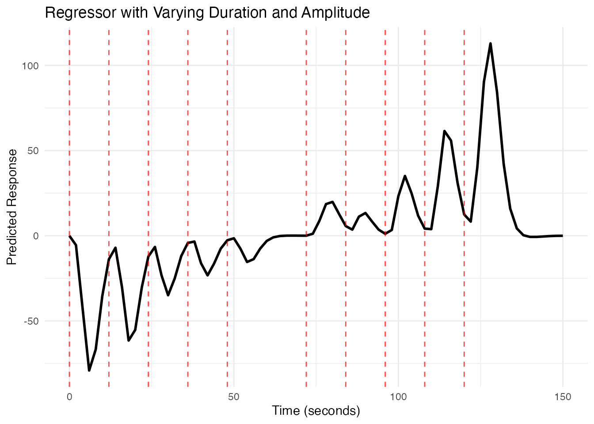
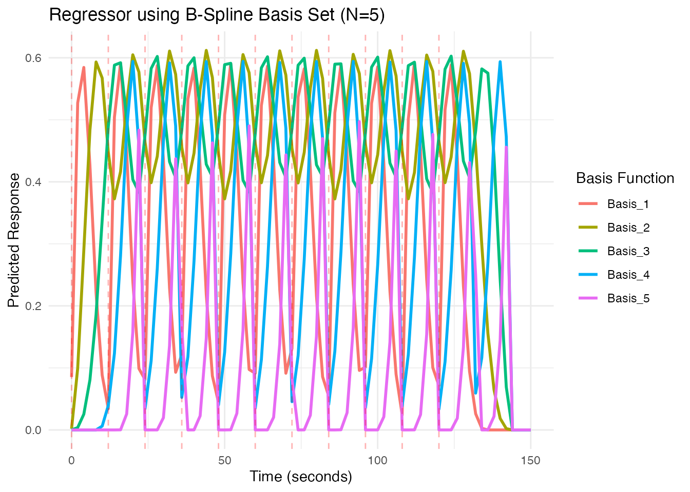
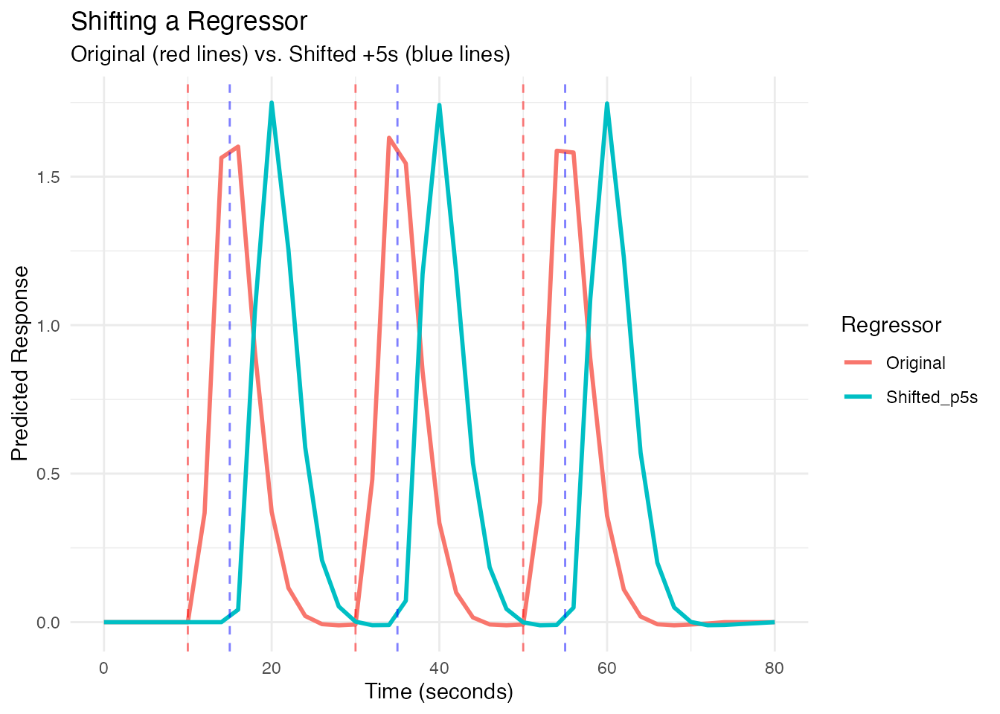

vignettes/a_02_regressor.Rmd
a_02_regressor.RmdIn fMRI analysis, a regressor (or predictor) represents the expected BOLD signal timecourse associated with a specific experimental condition or event type. It’s typically created by convolving a series of event onsets (often represented as delta functions or “sticks”) with a hemodynamic response function (HRF).
fmrireg provides the regressor() function
to easily create these objects from event timings and an HRF. While
these regressor objects are often constructed automatically behind the
scenes by modeling functions like fmri_lm, this vignette
explores how to create and manipulate them directly, offering finer
control over the model components.
Suppose we have a simple event-related fMRI design with stimuli
presented every 12 seconds. We want to model these events using the SPM
canonical HRF (HRF_SPMG1). The events are brief, so we
model them with a duration of 0 seconds (instantaneous).
# Define event onsets
onsets <- seq(0, 10 * 12, by = 12)
# Create the regressor object
# Uses HRF_SPMG1 by default if no hrf is specified
# Duration is 0 by default
reg1 <- regressor(onsets = onsets, hrf = HRF_SPMG1)
# Print the regressor object to see its properties (uses new print.Reg method)
print(reg1)
# Access components directly from the regressor object
head(reg1$onsets)
#> [1] 0 12 24 36 48 60
fmrihrf::nbasis(reg1)
#> [1] 1A regressor object stores the event information but
doesn’t automatically compute the timecourse. To get the predicted BOLD
signal at specific time points (e.g., corresponding to scan acquisition
times), we use the evaluate() function.
# Define a time grid corresponding to scan times (e.g., TR=2s)
TR <- 2
scan_times <- seq(0, 140, by = TR)
# Evaluate the regressor at scan times
predicted_bold <- fmrihrf::evaluate(reg1, scan_times)
# Plot the predicted timecourse using ggplot2
plot_df <- data.frame(Time = scan_times, Response = predicted_bold)
ggplot(plot_df, aes(x = Time, y = Response)) +
geom_line(linewidth = 1) +
geom_vline(xintercept = reg1$onsets, linetype = "dashed", color = "red", alpha = 0.7) +
labs(title = "Predicted BOLD Response (SPM HRF)",
x = "Time (seconds)",
y = "Predicted Response") +
theme_minimal()
# The autoplot() method provides a quick ggplot object
# library(ggplot2)
# autoplot(reg1, grid = scan_times)The autoplot() method (requires ggplot2)
provides a quick way to visualize the evaluated timecourse.
Sometimes events have different durations. The duration
argument in regressor() can take a vector matching the
length of onsets.
# Example onsets and durations
onsets_var_dur <- seq(0, 5 * 12, length.out = 6)
durations_var <- 1:length(onsets_var_dur) # Durations increase from 1s to 6s
# Create regressor with varying durations
reg_var_dur <- regressor(onsets_var_dur, HRF_SPMG1, duration = durations_var)
print(reg_var_dur)
# Evaluate and plot
scan_times_dur <- seq(0, max(onsets_var_dur) + 30, by = TR)
pred_var_dur <- fmrihrf::evaluate(reg_var_dur, scan_times_dur)
plot_df_dur <- data.frame(Time = scan_times_dur, Response = pred_var_dur)
ggplot(plot_df_dur, aes(x = Time, y = Response)) +
geom_line(linewidth = 1) +
geom_vline(xintercept = reg_var_dur$onsets, linetype = "dashed", color = "red", alpha = 0.7) +
labs(title = "Regressor with Varying Event Durations",
subtitle = "Duration increases over time",
x = "Time (seconds)",
y = "Predicted Response") +
theme_minimal()
By default (summate=TRUE), the predicted response
accumulates if events overlap or have extended duration. Setting
summate=FALSE models saturation, where the response width
increases with duration, but the peak amplitude doesn’t necessarily.
# Create regressor with varying durations, summate=FALSE
reg_var_dur_nosum <- regressor(onsets_var_dur, HRF_SPMG1,
duration = durations_var, summate = FALSE)
# Evaluate and plot
pred_var_dur_nosum <- fmrihrf::evaluate(reg_var_dur_nosum, scan_times_dur)
plot_df_dur_nosum <- data.frame(Time = scan_times_dur, Response = pred_var_dur_nosum)
ggplot(plot_df_dur_nosum, aes(x = Time, y = Response)) +
geom_line(linewidth = 1) +
geom_vline(xintercept = reg_var_dur_nosum$onsets, linetype = "dashed", color = "red", alpha = 0.7) +
labs(title = "Regressor with Varying Durations (summate=FALSE)",
subtitle = "Models saturation, peak height may not increase with duration",
x = "Time (seconds)",
y = "Predicted Response") +
theme_minimal()
We can model variations in event intensity or some associated
parameter by providing an amplitude vector. This creates a
parametric regressor where the height of the HRF for each event
is scaled by the corresponding amplitude value.
# Example onsets and amplitudes (e.g., representing task difficulty)
onsets_amp <- seq(0, 10 * 12, length.out = 11)
amplitudes_raw <- 1:length(onsets_amp)
# It's common practice to center the modulator
amplitudes_scaled <- scale(amplitudes_raw, center = TRUE, scale = FALSE)
# Create the parametric regressor
reg_amp <- regressor(onsets_amp, HRF_SPMG1, amplitude = amplitudes_scaled)
print(reg_amp)
# Evaluate and plot
scan_times_amp <- seq(0, max(onsets_amp) + 30, by = TR)
pred_amp <- fmrihrf::evaluate(reg_amp, scan_times_amp)
plot_df_amp <- data.frame(Time = scan_times_amp, Response = pred_amp)
ggplot(plot_df_amp, aes(x = Time, y = Response)) +
geom_line(linewidth = 1) +
geom_vline(xintercept = reg_amp$onsets, linetype = "dashed", color = "red", alpha = 0.7) +
# Add points showing amplitude (scaled for visibility)
geom_point(data = data.frame(Time = reg_amp$onsets, Amplitude = reg_amp$amplitude),
aes(x = Time, y = Amplitude * 0.2), color = "blue", size = 2) +
labs(title = "Parametric Regressor with Varying Amplitude",
subtitle = "Amplitude (centered) increases over time",
x = "Time (seconds)",
y = "Predicted Response") +
theme_minimal()
You can provide both duration and amplitude
vectors to model events that vary in both aspects.
set.seed(123)
onsets_comb <- seq(0, 10 * 12, length.out = 11)
amps_comb <- scale(1:length(onsets_comb), center = TRUE, scale = FALSE)
durs_comb <- sample(1:5, length(onsets_comb), replace = TRUE)
reg_comb <- regressor(onsets_comb, HRF_SPMG1,
amplitude = amps_comb, duration = durs_comb)
print(reg_comb)
# Evaluate and plot
scan_times_comb <- seq(0, max(onsets_comb) + 30, by = TR)
pred_comb <- fmrihrf::evaluate(reg_comb, scan_times_comb)
plot_df_comb <- data.frame(Time = scan_times_comb, Response = pred_comb)
ggplot(plot_df_comb, aes(x = Time, y = Response)) +
geom_line(linewidth = 1) +
geom_vline(xintercept = reg_comb$onsets, linetype = "dashed", color = "red", alpha = 0.7) +
labs(title = "Regressor with Varying Duration and Amplitude",
x = "Time (seconds)",
y = "Predicted Response") +
theme_minimal()
If you use an HRF object with multiple basis functions (e.g.,
HRF_SPMG3, HRF_BSPLINE), the
regressor object will represent multiple timecourses, one
for each basis function. evaluate() will return a
matrix.
# Use a B-spline basis set
onsets_basis <- seq(0, 10 * 12, length.out = 11)
hrf_basis <- HRF_BSPLINE # Uses N=5 basis functions by default
reg_basis <- regressor(onsets_basis, hrf_basis)
print(reg_basis)
nbasis(reg_basis) # Should be 5
#> [1] 5
# Evaluate - this returns a matrix
scan_times_basis <- seq(0, max(onsets_basis) + 30, by = TR)
pred_basis_matrix <- fmrihrf::evaluate(reg_basis, scan_times_basis)
dim(pred_basis_matrix) # rows = time points, cols = basis functions
#> [1] 76 5
# Plot the basis set regressors using autoplot
# autoplot(reg_basis, grid = scan_times_basis)
# Or plot manually with ggplot
colnames(pred_basis_matrix) <- paste0("Basis_", 1:ncol(pred_basis_matrix))
plot_df_basis <- as.data.frame(pred_basis_matrix) %>%
mutate(Time = scan_times_basis) %>%
pivot_longer(-Time, names_to = "Basis", values_to = "Response")
ggplot(plot_df_basis, aes(x = Time, y = Response, color = Basis)) +
geom_line(linewidth = 1) +
geom_vline(xintercept = reg_basis$onsets, linetype = "dashed", color = "red", alpha = 0.3) +
labs(title = "Regressor using B-Spline Basis Set (N=5)",
x = "Time (seconds)",
y = "Predicted Response",
color = "Basis Function") +
theme_minimal()
You can temporally shift all onsets within a regressor using the
shift() method.
# Original regressor
reg_orig <- regressor(onsets = c(10, 30, 50), hrf = HRF_SPMG1)
# Shifted regressor (delay by 5 seconds)
reg_shifted <- fmrihrf::shift(reg_orig, shift_amount = 5)
reg_orig$onsets
#> [1] 10 30 50
reg_shifted$onsets # Onsets are now 15, 35, 55
#> [1] 15 35 55
# Plot both
scan_times_shift <- seq(0, 80, by = TR)
pred_orig <- fmrihrf::evaluate(reg_orig, scan_times_shift)
pred_shifted <- fmrihrf::evaluate(reg_shifted, scan_times_shift)
plot_df_shift <- data.frame(
Time = scan_times_shift,
Original = pred_orig,
Shifted_p5s = pred_shifted
) %>%
pivot_longer(-Time, names_to = "Regressor", values_to = "Response")
ggplot(plot_df_shift, aes(x = Time, y = Response, color = Regressor)) +
geom_line(linewidth = 1) +
geom_vline(xintercept = reg_orig$onsets, linetype = "dashed", color = "red", alpha = 0.5) +
geom_vline(xintercept = reg_shifted$onsets, linetype = "dashed", color = "blue", alpha = 0.5) +
labs(title = "Shifting a Regressor",
subtitle = "Original (red lines) vs. Shifted +5s (blue lines)",
x = "Time (seconds)",
y = "Predicted Response") +
theme_minimal()